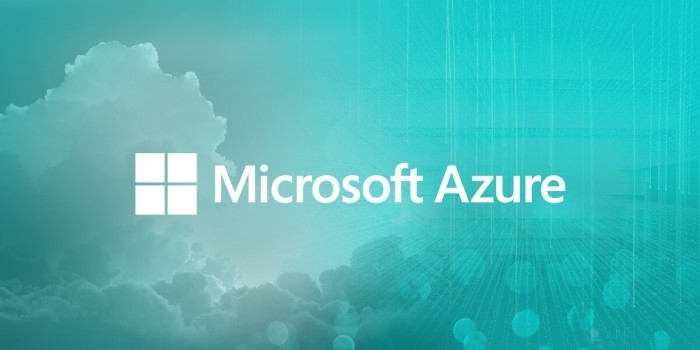

Beasiswa Kelas Menjadi Azure Cloud Developer

Hi Developer
Dicoding bekerja sama dengan Microsoft untuk mengembangkan Academy terbaru, yakni kelas Menjadi Azure Cloud Developer. Microsoft Azure adalah sebuah platform komputasi awan Microsoft yang ditujukan untuk membantu bisnis dalam memberi layanan teknologi informasi dan kemudahan untuk membangun, mengelola, dan deploy suatu aplikasi tanpa harus memikirkan pengadaan perangkat keras seperti server dan jaringan.
Melalui kelas “Menjadi Azure Cloud Developer” kalian akan belajar bagaimana :
• mengembangkan aplikasi web dan mobile
• men-deploy-nya menggunakan Azure App Service
• membuat server database SQL
• menyimpan beragam jenis data dan file menggunakan Azure Storage
• menganalisa gambar dan membuat aplikasi tanya jawab menggunakan layanan Azure Cognitive
Pembelajaran kelas ini sangat cocok bagi para developer yang tertarik untuk men-deploy aplikasi dengan memanfaatkan Azure Cloud. Microsoft akan memberikan beasiswa kelas Menjadi Azure Cloud Developer dan token Azure secara GRATIS (kuota terbatas). Jika tertarik, silakan daftar melalui tautan berikut: http://bit.ly/BeasiswaMenjadiAzureCloudDeveloper
Beasiswa ini akan dibagi menjadi 4 Batch, antara lain :
• Pengumuman penerima beasiswa Batch 1 pada tanggal 14 Maret 2019.
• Pengumuman penerima beasiswa Batch 2 pada tanggal 29 Maret 2019.
• Pengumuman penerima beasiswa Batch 3 pada tanggal 30 April 2019.
• Pengumuman penerima beasiswa Batch 4 pada tanggal 14 Juni 2019.
Kami akan mengumumkan daftar penerima beasiswa via blog dan social media Dicoding. Jika ada pertanyaan, silakan hubungi kami melalui email Tim Dicoding. Dengan senang hati kami akan membantu Anda.
Ayo daftar sekarang!